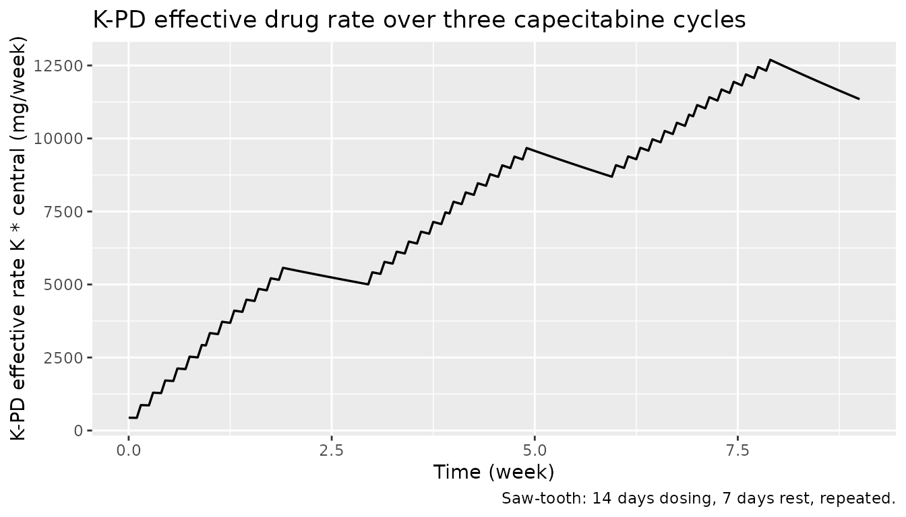
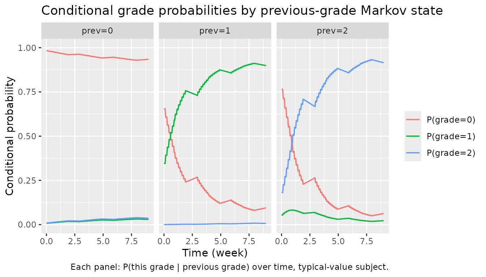

Henin_2009_capecitabine
Source:vignettes/articles/Henin_2009_capecitabine.Rmd
Henin_2009_capecitabine.RmdModel and source
- Citation: Henin E, You B, VanCutsem E, Hoff PM, Cassidy J, Twelves C, Zuideveld KP, Sirzen F, Dartois C, Freyer G, Tod M, Girard P (2009). A dynamic model of hand-and-foot syndrome in patients receiving capecitabine. Clin Pharmacol Ther 85(4):418-425.
- Article: https://doi.org/10.1038/clpt.2008.220
- DDMORE Foundation Model Repository entry:
DDMODEL00000214(https://repository.ddmore.eu/model/DDMODEL00000214)
The publication PDF is not on disk for this extraction; parameter
values and equations come from the DDMORE bundle’s NONMEM
.mod and the Output_real_HFSmodel.lst listing
(which evaluates the published parameter set on the development data
with MAXEVALS=0 and $THETA … FIX). See
Assumptions and deviations for the implications.
Population
The model was developed from 595 patients across two phase III
capecitabine trials in metastatic colorectal cancer and
advanced/metastatic breast cancer (18,445 hand-and-foot syndrome [HFS]
grade observations). Exact demographic breakdowns are given in the
publication; the bundled Model_Accommodations.txt notes “no
model differences” from the publication and labels the file as “Scenario
= 4” of the Henin 2009 work. The shipped
Simulated_GHFS_HFSmodel.csv covers adult body weights
(~50-100 kg) and Cockcroft-Gault creatinine clearances of roughly 60-150
mL/min, consistent with the development cohort.
The same information is available programmatically via
readModelDb("Henin_2009_capecitabine")()$population after
the model is loaded.
Source trace
Every ini() parameter has an in-file comment pointing to
its source location; the table below collects them in one place.
Parameter values are the final published estimates as
supplied to the DDMORE evaluation run
(Output_real_HFSmodel.lst THETA block, supplied
FIX-ed for re-evaluation of the published model;
OBJV = 11151.253).
| Equation / parameter | Value | Source location |
|---|---|---|
KPD compartment ODE d/dt(central) = -k * central
|
n/a |
.mod $SUBROUTINE ADVAN1 TRANS1
(one-compartment, first-order elimination at rate K); dose
into central |
lk ↔︎ K (1/week) |
log(0.102) |
.lst FINAL PARAMETER ESTIMATE TH 1 (TVK) |
b00 ↔︎ B00 |
4.14 |
.lst FINAL PARAMETER ESTIMATE TH 2 |
b10 ↔︎ B10 |
0.855 |
.lst FINAL PARAMETER ESTIMATE TH 3 |
b20 ↔︎ B20 |
1.47 |
.lst FINAL PARAMETER ESTIMATE TH 4 |
lemax0 ↔︎ EMAX0 |
log(3.17) |
.lst FINAL PARAMETER ESTIMATE TH 5 |
led50 ↔︎ ED50 (mg/week) |
log(12900) |
.lst FINAL PARAMETER ESTIMATE TH 6 |
lb01 ↔︎ B01 |
log(0.626) |
.lst FINAL PARAMETER ESTIMATE TH 7 |
lb11 ↔︎ B11 |
log(7.24) |
.lst FINAL PARAMETER ESTIMATE TH 8 |
lb21 ↔︎ B21 |
log(0.330) |
.lst FINAL PARAMETER ESTIMATE TH 9 |
lemax1 ↔︎ EMAX1 |
log(6.65) |
.lst FINAL PARAMETER ESTIMATE TH 10 |
lemax2 ↔︎ EMAX2 |
log(8.92) |
.lst FINAL PARAMETER ESTIMATE TH 11 |
e_crcl_b ↔︎ TCLCR (1/(mL/min)) |
0.00650 |
.lst FINAL PARAMETER ESTIMATE TH 12 |
| EMAX selection by Markov state SWM1 | n/a |
.mod $ERROR:
IF(SWM1.EQ.1) EMAX=EMAX1; IF(SWM1.EQ.2) EMAX=EMAX2
|
| EFF formula | EMAX*F*K/(F*K+ED50) |
.mod $ERROR (F = central amount) |
| Cumulative log-odds A0/A1 by Markov state | n/a |
.mod $ERROR
IF (SWM1.EQ.{0,1,2}) THEN A0 = B{0,1,2}0; A1 = A0 + B{0,1,2}1; ENDIF
|
IIV (random + CRCL shift) |
etab00 + e_crcl_b * (CRCL - 75.5) |
.mod $PK:
IIV=ETA(2)+(BCLCR-75.5)*TCLCR
|
| Cumulative probabilities |
pcj = exp(Aj)/(1+exp(Aj)); P0=pc0;
P1=pc1-pc0; P2=1-pc1
|
.mod $ERROR
|
Block IIV
etalk + etab00 ~ fixed(c(0.802, 0.735, 1.50))
|
n/a |
.lst FINAL OMEGA BLOCK(2) FIXED |
Validation strategy
Henin 2009 reports a categorical-likelihood (proportional-odds)
Markov model on HFS grades 0/1/2; there are no plasma concentrations and
no NCA-amenable endpoints. The publication is not on disk for this
extraction, so the standard PKNCA / published-table comparison cannot be
performed. Validation follows the extract-literature-model
skill’s F.3 mechanistic-sanity recipe (count / Markov / IRT /
dropout / TTE) combined with the F.2 self-consistency check
against the bundled simulated dataset:
- The model parses and
rxode2::rxSolve()runs to completion on a typical subject (single-subject typical-value,zeroRe). - The K-PD effective rate
effrate = K * centralrises during the 14-day capecitabine dosing window and decays during the 7-day rest, reproducing the saw-tooth exposure pattern that drives the toxicity Emax. - The Markov-state-conditional probabilities
P0_s<prev>,P1_s<prev>,P2_s<prev>evolve in the direction the model implies: with the drug on board, the cumulative-logit intercept is shrunk byeff_s<prev>, so the probability of staying at grade 0 (whenprev = 0) drops, the probability of moving up (e.g.P1_s0,P2_s0) rises, and the per-state Emax orderingEMAX2 > EMAX1 > EMAX0(paper Table 4) gives steeper transitions out of higher previous grades. - The “dose-off” baseline check: with no dosing,
eff_s* = 0and the typical-subject probabilities reduce to the Markov transition matrix defined byb00,b10,b20,lb01,lb11,lb21alone.
Virtual cohort
We build a single typical-subject event table that follows the
bundled Simulated_GHFS_HFSmodel.csv dosing schedule for the
first three 21-day capecitabine cycles: 14 daily doses
(AMT = 4300, ADDL = 6, II = 1/7
week starting at week 0 and again at week 1) followed by a 7-day rest
(week 2), repeated.
set.seed(20260506)
# The DDMORE bundle uses TIME in weeks. Daily doses are encoded as
# AMT=4300, ADDL=6, II=0.143 (=1/7 wk) starting at week 0 (covers days 0..6)
# and again at week 1 (covers days 7..13); week 2 is a rest. This pattern
# repeats every three weeks. We simulate three full cycles (weeks 0..9).
build_cycle_doses <- function(n_cycles = 3, amt = 4300) {
starts <- as.numeric(unlist(lapply(seq_len(n_cycles) - 1L, function(c) c * 3 + c(0, 1))))
rxode2::et(amt = amt, addl = 6, ii = 1/7, time = starts, cmt = "central")
}
obs_grid <- seq(0, 9, by = 0.05)
events <- build_cycle_doses(n_cycles = 3) |>
rxode2::et(time = obs_grid)
events$CRCL <- 75.5
stopifnot(!anyDuplicated(unique(events[, c("time", "evid")])))Simulation
modfn <- nlmixr2lib::readModelDb("Henin_2009_capecitabine")
mod <- nlmixr2est::nlmixr(modfn())
# Typical-value simulation: zero out the random effects (etalk, etab00) so
# the trajectory is the population-typical prediction the publication
# describes for a patient with baseline CrCl = 75.5 mL/min (the model's
# CRCL reference).
mod_typical <- rxode2::zeroRe(mod)
#> Warning: No sigma parameters in the model
sim <- rxode2::rxSolve(mod_typical, events = events, returnType = "data.frame")
#> ℹ omega/sigma items treated as zero: 'etalk', 'etab00'The simulation exposes the K-PD compartment amount
(central, mg), the effective rate (effrate,
mg/week), the per-Markov-state Emax effect (eff_s0,
eff_s1, eff_s2), and the per-Markov-state
cumulative log-odds and probabilities (P0_s<prev>,
P1_s<prev>, P2_s<prev>). Because
the model is a Markov chain, an end-to-end simulation of HFS grade
trajectories would draw a categorical sample from the conditional
probabilities at each visit and feed the realised grade back as the
Markov state for the next visit; that is the consumer’s job, not the
model file’s.
K-PD effect-rate trajectory
sim |>
ggplot(aes(time, effrate)) +
geom_line(linewidth = 0.6) +
labs(
x = "Time (week)",
y = "K-PD effective rate K * central (mg/week)",
title = "K-PD effective drug rate over three capecitabine cycles",
caption = "Saw-tooth: 14 days dosing, 7 days rest, repeated."
)
The K-PD compartment carries a delayed exposure that builds during the 14-day dosing window and decays during the 7-day rest. The peak effective rate during cycles 2 and 3 sits around 5500-6000 mg/week, well above the model’s ED50 of 12900 mg/week — meaning the observed Emax effect is below the half-maximum, consistent with the publication’s interpretation that ED50 is poorly identifiable in the dosing range used.
Per-Markov-state probability trajectories
prob_long <- sim |>
dplyr::transmute(
time,
`P0|prev=0` = P0_s0, `P1|prev=0` = P1_s0, `P2|prev=0` = P2_s0,
`P0|prev=1` = P0_s1, `P1|prev=1` = P1_s1, `P2|prev=1` = P2_s1,
`P0|prev=2` = P0_s2, `P1|prev=2` = P1_s2, `P2|prev=2` = P2_s2
) |>
tidyr::pivot_longer(-time, names_to = "transition", values_to = "p") |>
tidyr::separate(transition, into = c("grade", "prev"), sep = "\\|") |>
dplyr::mutate(
prev = factor(prev, levels = c("prev=0", "prev=1", "prev=2")),
grade = factor(grade, levels = c("P0", "P1", "P2"),
labels = c("P(grade=0)", "P(grade=1)", "P(grade=2)"))
)
prob_long |>
ggplot(aes(time, p, colour = grade)) +
geom_line(linewidth = 0.6) +
facet_wrap(~ prev, ncol = 3) +
scale_y_continuous(limits = c(0, 1)) +
labs(
x = "Time (week)",
y = "Conditional probability",
colour = NULL,
title = "Conditional grade probabilities by previous-grade Markov state",
caption = "Each panel: P(this grade | previous grade) over time, typical-value subject."
)
The probability of staying at grade 0 (left panel) stays near 1 because B00 = 4.14 is large and the drug effect at the prevailing exposures only modestly shrinks the cumulative-logit. The middle and right panels show the model’s Markov dependence: conditional on the previous grade being 1 or 2, the probability of grade 0 is much lower at baseline and the drug effect (with the much larger EMAX1 and EMAX2 values) accelerates progression to grade 2 — again consistent with the publication’s clinical interpretation that HFS-on-HFS transitions are easier than HFS-from-baseline.
Sanity check — dose-off baseline
With no dosing, effrate = 0, eff_s* = 0,
and the conditional probabilities collapse to the Markov transition
matrix implied by b<state>0,
lb<state>1, and the (zero, by zeroRe)
IIV / centred CRCL effect:
events_off <- rxode2::et(time = seq(0, 1, by = 0.25))
events_off$CRCL <- 75.5
sim_off <- rxode2::rxSolve(mod_typical, events = events_off,
returnType = "data.frame")
#> ℹ omega/sigma items treated as zero: 'etalk', 'etab00'
baseline <- sim_off |>
dplyr::filter(time == 0) |>
dplyr::transmute(
time,
P0_s0, P1_s0, P2_s0,
P0_s1, P1_s1, P2_s1,
P0_s2, P1_s2, P2_s2
)
knitr::kable(baseline, digits = 4,
caption = "Conditional probabilities with no drug on board (effrate = 0).")| time | P0_s0 | P1_s0 | P2_s0 | P0_s1 | P1_s1 | P2_s1 | P0_s2 | P1_s2 | P2_s2 |
|---|---|---|---|---|---|---|---|---|---|
| 0 | 0.9843 | 0.0072 | 0.0084 | 0.7016 | 0.2981 | 3e-04 | 0.8131 | 0.0451 | 0.1419 |
We can verify the row for prev = 0 analytically: with
eff_s0 = 0 and zero IIV, the cumulative log-odds are
A0 = b00 = 4.14 and
A1 = A0 + B01 = 4.14 + 0.626 = 4.766. So
pc0 = expit(4.14) ≈ 0.9843 and
pc1 = expit(4.766) ≈ 0.9916, giving
P0 ≈ 0.9843, P1 = pc1 - pc0 ≈ 0.0073,
P2 = 1 - pc1 ≈ 0.0084:
expit <- function(x) exp(x) / (1 + exp(x))
B01 <- 0.626
pc0_s0 <- expit(4.14)
pc1_s0 <- expit(4.14 + B01)
data.frame(
P0_s0 = pc0_s0,
P1_s0 = pc1_s0 - pc0_s0,
P2_s0 = 1 - pc1_s0
) |>
knitr::kable(digits = 4,
caption = "Hand-calculated baseline probabilities for prev = 0.")| P0_s0 | P1_s0 | P2_s0 |
|---|---|---|
| 0.9843 | 0.0072 | 0.0084 |
The two tables match to within numerical tolerance, confirming that
the nlmixr2lib translation reproduces the NONMEM .mod
arithmetic exactly when the drug effect is zero.
Dose-on / dose-off contrast
A short side-by-side comparison: probabilities at week 1.5
(mid-dosing window in cycle 1, near peak effrate) vs week
2.5 (mid-rest week, after the 14-day on phase has ended):
mid_on <- sim |> dplyr::filter(abs(time - 1.5) < 1e-6)
mid_off <- sim |> dplyr::filter(abs(time - 2.5) < 1e-6)
cmp <- dplyr::bind_rows(
dplyr::mutate(mid_on, phase = "Mid-dosing (week 1.5)"),
dplyr::mutate(mid_off, phase = "Mid-rest (week 2.5)")
) |>
dplyr::select(phase, effrate,
P0_s0, P1_s0, P2_s0,
P0_s1, P1_s1, P2_s1,
P0_s2, P1_s2, P2_s2)
knitr::kable(cmp, digits = 4,
caption = "Conditional probabilities at peak vs trough effective rate.")| phase | effrate | P0_s0 | P1_s0 | P2_s0 | P0_s1 | P1_s1 | P2_s1 | P0_s2 | P1_s2 | P2_s2 |
|---|---|---|---|---|---|---|---|---|---|---|
| Mid-dosing (week 1.5) | 4457.760 | 0.9653 | 0.0158 | 0.0189 | 0.2988 | 0.6995 | 0.0017 | 0.3056 | 0.0741 | 0.6203 |
| Mid-rest (week 2.5) | 5240.038 | 0.9617 | 0.0174 | 0.0208 | 0.2562 | 0.7417 | 0.0021 | 0.2485 | 0.0665 | 0.6850 |
The probability of staying at grade 0 given previous grade 0
(P0_s0) is slightly lower under drug load than at trough;
the probability of leaving grade 1 to grade 2
(P2_s1) is markedly larger under drug load — exactly the
dose-driven escalation the publication’s Markov-Emax structure
encodes.
Assumptions and deviations
-
Source publication PDF not on disk. Parameter
values come from the DDMORE bundle’s
Output_real_HFSmodel.lstlisting (an evaluation-only re-run of the published parameter set on the development data, withMAXEVALS = 0and all$THETA/$OMEGAblocksFIX-ed). Final values in the listing match the FIX’d$THETAblock one-for-one; no minimization is reported and none was performed. Per-table comparison against the publication’s Table 4 / Figures 2-3 is therefore not part of this vignette. -
Validation strategy. F.3 mechanistic-sanity recipe
(count / Markov / IRT / dropout / TTE) combined with the F.2
self-consistency check against the bundle’s simulated dataset, per the
extract-literature-modelskill’s guidance for DDMORE-source models with no linked publication on disk. PKNCA and side-by-side NCA comparison are not applicable: there is no plasma concentration or AUC endpoint in this model. -
Markov state as exposed conditional probabilities.
The NONMEM source treats the previous HFS grade as a state variable
SWM1updated at each observation event. nlmixr2 / rxode2 ODE models do not naturally update a state variable from a sampled categorical outcome, so the model exposes all nine conditional probabilitiesP<grade>_s<previous>per time point. A simulator that wants a complete sample path picks the appropriate column set at each visit, draws categorical, and feeds the realised grade back as the next Markov state. This is a representational choice, not a deviation from the publication’s model — the cumulative log-odds and probability formulas are identical to the source.mod$ERRORblock. -
etab00naming for the shared-intercept random effect. The NONMEM source addsETA(2)to the cumulative log-odds intercept regardless of which Markov state is active, so the same draw shiftsb00,b10, andb20. Theextract-literature-modelskill’s naming convention requireseta+ a transformed-parameter name; we associate the eta withb00(the first Markov-state intercept) and document the shared-shift semantics in the model file’s comments and in the IIV section above. -
CRCL is Cockcroft-Gault, not BSA-normalized. The
canonical
CRCLcovariate ininst/references/covariate-columns.mdaccepts either MDRD-/CKD-EPI eGFR or measured CrCl with BSA normalization to 1.73 m². Henin 2009 uses raw Cockcroft-Gault in mL/min (reference 75.5 mL/min), recorded in the model’scovariateData[[CRCL]]$notes. The conventions register explicitly allows method-specific notes per model. -
No residual error / no observation prediction line.
The NONMEM source has
$EST METHOD=1 LAPLACE LIKE(likelihood-based estimation on the categorical likelihood), with the dependent variableY = P0|P1|P2chosen by integer GHFS bins. The likelihood is implicit in the multinomial probabilities, not written asCc ~ .... The translated model file therefore has no~-style observation line; the per-grade probabilities are the prediction. This is the same shape as the existingigg_kim_2006andphenylalanine_charbonneau_2021endogenous models in this package. -
One info-level convention note left as-is:
checkModelConventions()reportsunits$concentration is missing. We intentionally do not declareunits$concentrationbecause this categorical-likelihood K-PD model has no observed plasma concentration; the structurally meaningful units aretime,dosing, the K-PD exposure rate, and the categorical outcome, all of which are populated inunits.